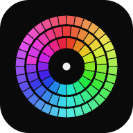

SCORE
000
BEST
000
PAUSED
計測を中断しています。
盤面は再開まで伏せられます。
虹彩のなかに、1 片だけ違う色があります
ログインすると記録が端末間で同期され、ランキングに載ります
違う 1 枚を
選ぶ
正解で
時間が回復
色差は縮み
盤面は細かく
誤答か時間切れで終了し、見分けられた最小の色差が記録されます。盤面は 2×2 から 10×10 まで 9 段階です。
2.5.3
T.OF... のアプリ
RESULT NEW RECORD
—
SEASON 2 — TOP 100

DELTA HUE をアプリとして追加
ホーム画面から、ブラウザの枠なしで起動できます
色の見えは周辺の明るさで変わります。色評価の標準は中性グレーです。